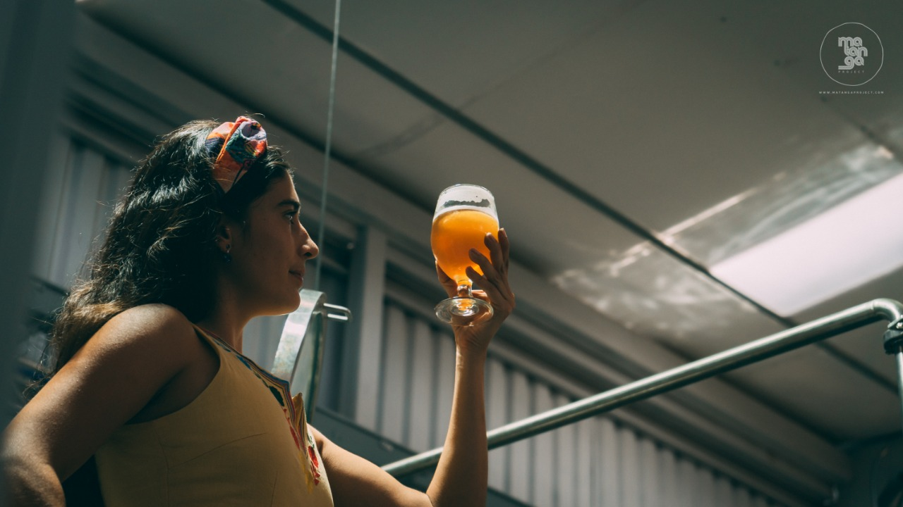
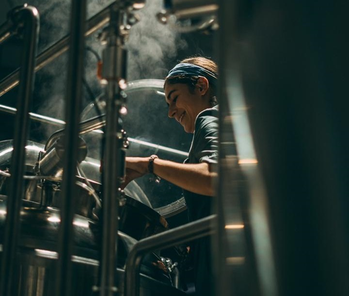
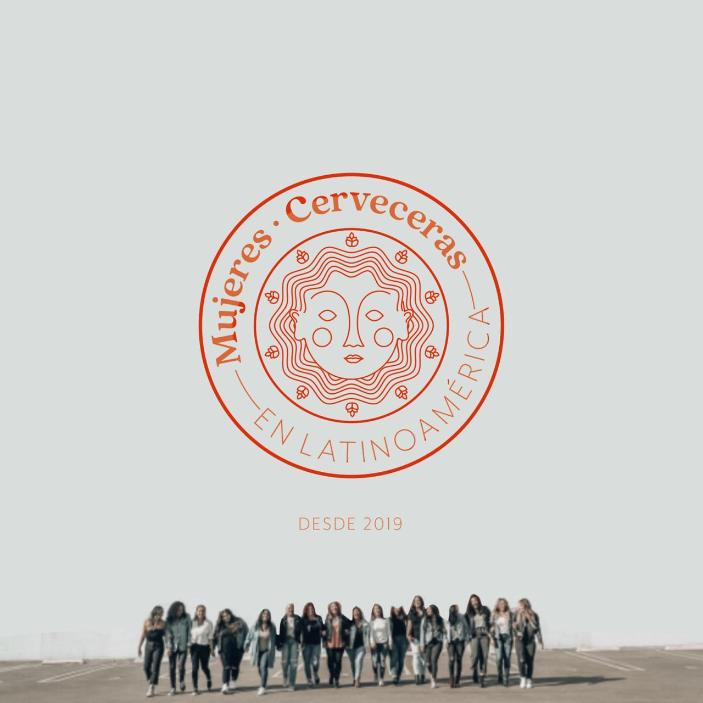

ˇˇˇ
Las mujeres toman cerveza light y los hombres stout, ¿cierto? No me lo creo - yo soy el vivo ejemplo de que no es así: aunque me encanta todo tipo de cerveza, lo más probable es que en una fiesta con amigos prefiera una cerveza suave.
La cerveza fue en principio una creación de las mujeres: eran ellas las que preparaban la bebida. Pero sabemos que el mundo de las bebidas alcohólicas está plagado de estereotipos sexistas fomentados por el mercadeo. En No Pasa Nada nos gusta la cerveza - también nos gusta cuestionar los estereotipos - así que quisimos hablar de las mujeres que hacen cerveza artesanal en Costa Rica.
Empezamos buscándolas en internet, pero ¿les ha pasado que buscan algo en internet y a pesar de que le ponen bastante, no lo encuentran? A nosotros nos pasó al principio.
Afortunadamente, pudimos hablar con Carolina Castro, quien junto con su socia Inken Groth y socio Dieter Neckerman, fundó Elviaje Cervecería en febrero de este año - gracias a ella, confirmamos que sí, por supuesto que hay mujeres haciendo cerveza en el país, pero sufren de poca exposición. Carolina nos habló acerca de su pasión por la cerveza, y de su incursión en un mundo típicamente asociado con los hombres.
¿Cómo surgió tu pasión por la cerveza y cómo se convirtió en negocio?
En mi caso el interés llegó por la antropología: la cerveza tiene con nosotros más de 13,000 años, y el lugar histórico que ha tenido es de hacer comunidad. Es un arte que se hace con muchísimo respeto.
Me apasiona mucho descubrir esa rama, la rama más antigua de la cerveza. A la hora de montar la cervecería lo hicimos en pro de ese arte y esa tradición; para poder conectar a la gente con esas historias.
¿Es difícil abrirse camino en esta industria siendo mujer?
En realidad no. A mí me parece que en Asociación y la comunidad de cerveza en general es super abierta. Nosotras tenemos el grupo de Cerveceras de Costa Rica y desde que lo iniciamos hemos tenido muchísimo apoyo de la comunidad.
Creo que más difícil que emprender o ser mujer dentro de la industria, es el tema del estereotipo de que la cerveza “es para hombres”. Es un estereotipo que ha hecho que muchas mujeres no sientan que es un lugar al que pueden entrar.
El grupo que tenemos lo que hace es incentivar que haya mujeres a que se apunten a ser parte de esta industria.
Existe la percepción de que las mujeres no toman cerveza o que si toman van a preferir una light, lager o michelada. Viendo el mercado nacional, ¿qué tan cierto lo ves?
Yo tengo bastantes años conociendo un poco sobre la industria de la cerveza y si he notado, por ejemplo, que cuando una mujer pide una recomendación de cerveza en un bar, le recomiendan la cerveza más dulce o ligera.
Creo que lo importante es reconocer que los paladares son universales. Todos tenemos paladares y gustos diferentes sin importar el género.
Tengo amigos hombres que prefieren la cerveza light o más dulce y amigas mujeres que prefieren la cerveza más amarga. Pero si no se hace un mercadeo inclusivo que comunique los productos a todo el mundo, se va a seguir excluyendo a una parte de la sociedad.
¿Qué tan fácil es encontrar otras mujeres haciendo cerveza en Costa Rica? Tal vez desde la perspectiva de Cerveceras de Costa rica nos podrías contar más.
Priscila Burgos - trabaja en Cerveza Mel y fue una de las creadoras de La Puris junto con María José Gutierrez, en representación de Costa Rica Beer Factory.
Alejandra Araya es la fermentadora y una de las dueñas de Costa Rica Meadery, hidromielería que ha sido galardonada a nivel mundial en las competencias más grandes. Fabiola Vega está como asistente cervecera en Arboleda. Noelia Peña es dueña y cervecera de Nomade Brewing. Natalia Rodríguez es dueña y cervecera de Hoppy Ideas junto con su esposo. Natalia Fonseca es una de las dueñas de Tierra y Libertad. Paula Flores y Naza han sido ganadoras del premio de mejor cerveza casera.
Courtney Cargill, de La Perra Hermosa, fue de las primeras personas en hacer cerveza artesanal en el país y es dueña y cervecera de esa compañía.
Sí hay representación a nivel nacional, aunque creo que falta mucho camino para lograr una industria más balanceada - ahí vamos, poco a poco.
Parte de ese camino no es solo por la representación, sino también la exposición. ¿Cuáles creés que son los principales retos para obtener mayor exposición?
Hay un reto muy grande: el de la expectativa automática. Se cree que no hay mujeres involucradas. Pasa mucho que aunque tengas tu propia cervecería o hagas tu propia cerveza la gente automáticamente piensa que el hombre que está al lado tuyo es el que hace la cerveza, o que uno está nada más como la novia de alguien.
Aún cuando nos presentamos en festivales, la gente siempre asume que la persona que hace la cerveza es un hombre.
Falta exposición en medios pero no solo para las mujeres; en general hay poca exposición para la cerveza artesanal.
A nivel latinoamericano estamos creando una asociación, Mujeres Cerveceras En Latinoamérica; la hemos estado lanzando desde el mes pasado. Por ahora son 8 países involucrados, juntos bajo la idea de dar mayor visibilidad a las mujeres que están involucradas en la cerveza.
Imágenes 1 y 2: Fotografías cortesía de Matanga Project por Jaime Zuluaga Vargas y María José Gutiérrez. https://instagram.com/matanga_project?igshid=1mvubpyyj81cc. Prohibida su reproducción total o parcial.
Imagen 3: Fotografía proporcionada por Carolina Castro de Elviaje Cervecería y Mujeres Cerveceras en Latinoamérica.